Giocare è da sempre un bisogno fondamentale dell’uomo. Noi di Ludimus lo sappiamo bene, e abbiamo l’obiettivo di ricordarlo anche agli altri. D’altronde gli antichi Romani erano d’accordo con noi, come testimonia il retro di una tavola da gioco romana rinvenuta in Algeria:
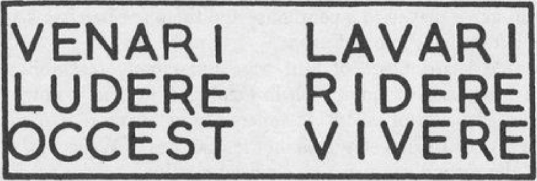
Cacciare, lavarsi, giocare, divertirsi: questo è vivere!
Ebbene sì, si giocava da tavolo fin dai tempi di Romolo, anzi, vi diremo di più: si giocava da tavolo già qualche millennio prima! Già Sumeri ed Egizi si dilettavano con la nobilissima attività ludica.
Come scoprirete con noi in questo viaggio nel mondo antico, ogni cultura aveva la propria forma di gioco, che spesso non era solo un passatempo, ma assumeva anche una connotazione religiosa. Infatti il ruolo della sorte e della fortuna nel gioco era visto come l’intervento del divino, un oracolo per interpretare il proprio fato e scoprire il futuro. L’importanza dei giochi era tale che venivano anche offerti in sacrificio e sepolti insieme ai defunti.
Naturalmente queste forme primordiali di gioco da tavolo sono un po’ diverse dai titoli che vi offriamo noi ogni settimana, anche se si può trovare qualche affinità qua e là. Per capirne meglio le tipologie si possono riconoscere tre categorie principali: i giochi di dadi e d’azzardo, le simulazioni di battaglie su una scacchiera, e le gare tra pedine.
Purtroppo però non è sempre facile ricostruirne le regole, dato che i nostri antenati avevano il brutto vizio di non includere i regolamenti nei loro reperti storici (ma d’altronde sappiamo per esperienza che il libretto è la prima cosa che si perde). Talvolta le regole si possono dedurre da altre fonti o da qualche aneddoto, altre volte la fantasia va a colmare le lacune, tanto le mummie non ci possono correggere.
A proposito di mummie, cominciamo il nostro viaggio nella valle del Nilo.
Nella cultura egizia il gioco era praticato da adulti e bambini e, come quasi ogni altro aspetto della vita quotidiana, era strettamente legato alla religione. Una partita poteva rappresentare il viaggio verso l’aldilà, e gli antichi egizi si mettevano a giocare coi morti (ovviamente era il vivo che lanciava anche per il defunto) per chiedere un consulto sulle scelte da fare, anticipando di qualche millennio il tressette col morto.
Vediamo ora qualche esempio di questi giochi, tra i più antichi giunti fino a noi.
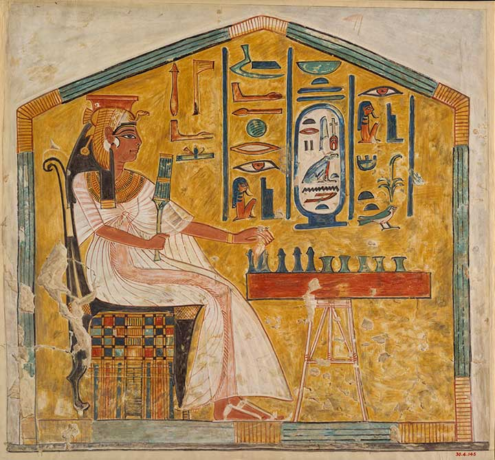
Nefertari che gioca a Senet
Il Senet è probabilmente il gioco egizio più famoso e diffuso, talmente apprezzato che Tutankhamon ne aveva ben cinque copie nel suo corredo funebre. Il gioco si svolgeva su una scacchiera di trenta caselle su cui cinque pedine per giocatore gareggiavano ad arrivare per prime in fondo al tracciato, lanciando dei bastoncini o delle ossa.
Sul retro della tavola da Senet molto spesso c’era il tabellone per giocare al Gioco delle Venti Caselle, di cui esistono versioni molto simili giocate nel Medio Oriente dai vicini Sumeri. Anche qui i giocatori gareggiano per arrivare in fondo al percorso e mettere in salvo le proprie pedine, cercando al contempo di scacciare quelle dell’avversario (a qualcun altro ricorda il “Non t’arrabbiare”?)
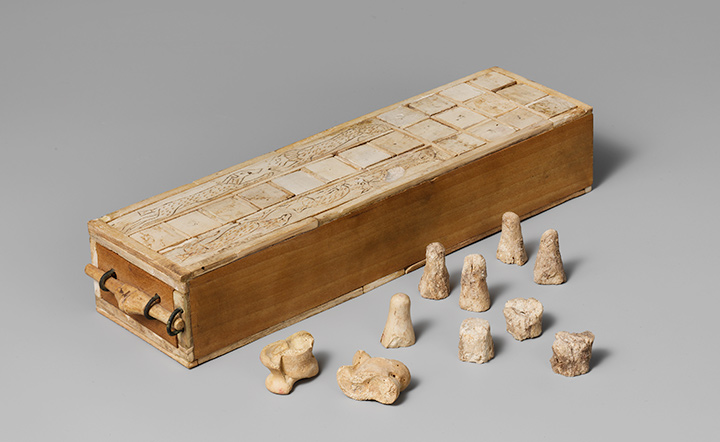
Il gioco delle venti caselle
Come avrete intuito gli Egizi amavano fare gare intorno ad un percorso, ma la gara più pucciosa era decisamente quella tra Cani e Sciacalli, seguendo un tracciato “bucherellato” attorno ad una palma
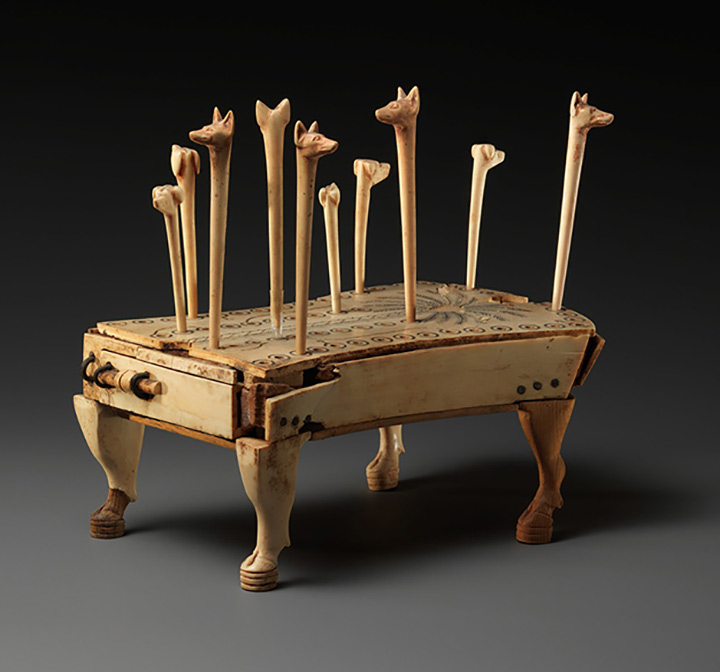
Degli adorabili cani e sciacalli si rincorrono attorno ad una palma
Infine vi presentiamo il Mehen, un gioco misterioso di cui le resgole ci sono totalmente sconosciute, ma del quale è giunta fino a noi la tavola a forma di serpente arrotolato su sé stesso, diviso in tante caselle. Che sia l’antenato del gioco dell’oca?
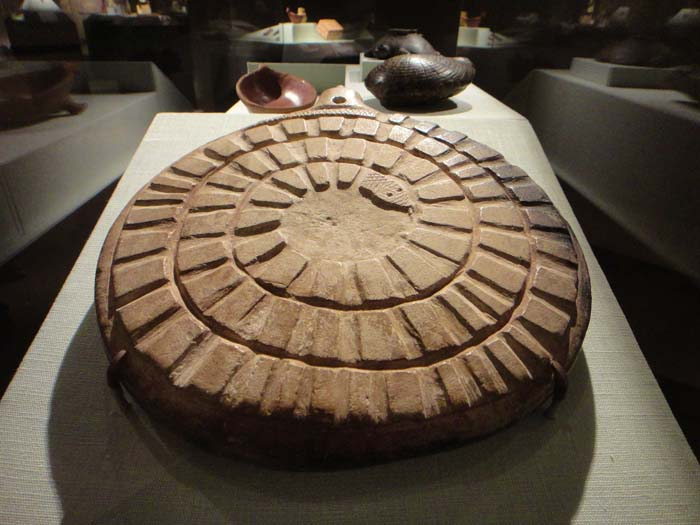
Il gioco del Serpente
Parlando di giochi orientali viene subito in mente il Go, e non a caso è il gioco che più ha caratterizzato la storia ludica cinese. La sua particolarità è che sebbene le sue origini siano molto antiche (Go era giocato fin dal secondo millennio avanti Cristo) è sopravvissuto fino ad oggi.
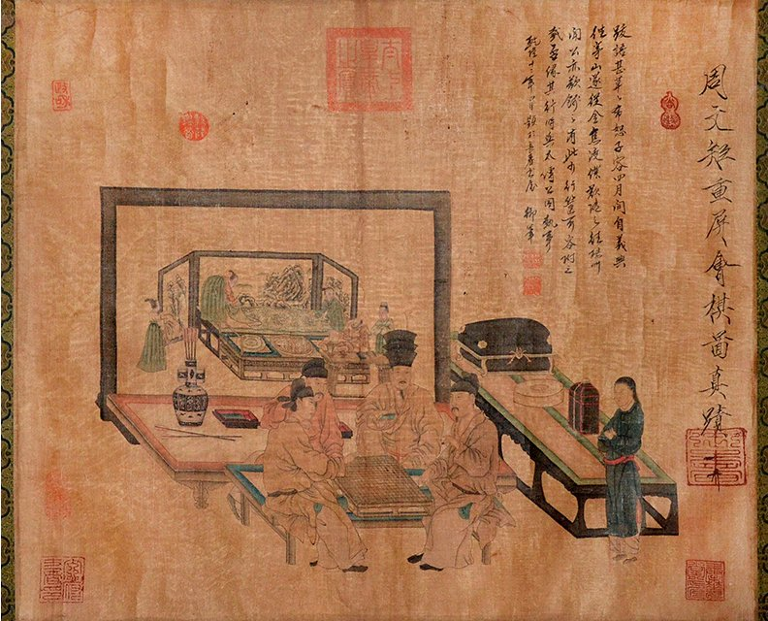
Alcuni Cinesi dell’undicesimo secolo si dilettano col Go
Passando ad un oriente più vicino a noi è d’obbligo citare il Gioco Reale di Ur, stretto parente del già citato Gioco delle venti caselle egizio. Un aspetto interessante è che questi giochi si trovano in varie culture antiche, probabilmente diffusi attraverso le vie commerciali, adattandosi ai gusti locali, pur variando qualche regola e la “veste grafica”: le rosette sumere diventavano geroglifici e viceversa.
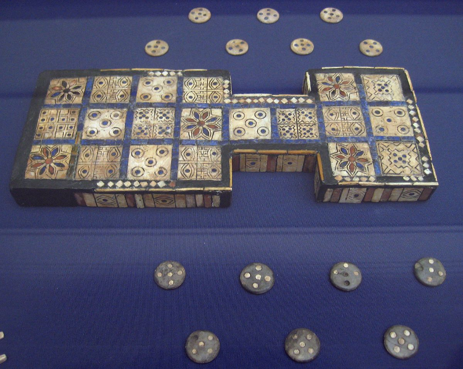
Il Gioco Reale di Ur
Infine vi proponiamo un ritrovamento archeologico recente: un set da gioco risalente addirittura al 2900-3100 a.C. ritrovato in Turchia. Il gioco è probabilmente un antenato degli scacchi, ma nessuna testimonianza che possa dare qualche idea delle regole è giunta fino a noi.
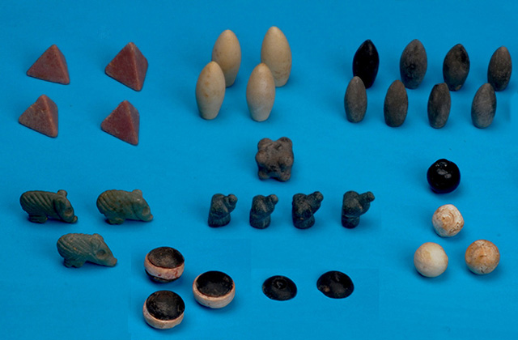
L’antichissimo e misterioso set da gioco turco
Così come accadeva per l’Egitto, neppure i grandi pilastri della società moderna, quali Grecia e Roma, potevano mancare di svaghi. Il gioco nelle due civiltà si è sviluppato in modo diverso e veniva anche praticato per fini differenti.
La componente religioso-simbolica permane anche nel Mediterraneo, tanto che in alcuni miti sono presenti dei e dee che si cimentano in gare, giochi di dadi e di azzardo, cosa che rendeva il gioco un'attività molto esclusiva agli occhi del popolo: per questo motivo nella Grecia antica solo persone e famiglie di rango elevato potevano permettersi di giocare.
Al contrario, a Roma il gioco era praticabile da tutti, anche donne e bambini di qualsiasi grado sociale. Gli uomini e i pater familias solitamente erano più votati al gioco d'azzardo, tanto che vennero scritte leggi che lo vietavano, in quanto distraeva i Romani dai compiti della vita pubblica: era lecito giocare solamente durante i Saturnalia, festività che si svolgeva nell'attuale periodo natalizio.
Come dado si utilizzavano gli Astragali, ovvero le ossa delle caviglie ovine. Avevano quattro facce, ognuna di un valore diverso (1, 3, 4 o 6). Se ne tiravano quattro: il tiro peggiore che un giocatore poteva fare era chiamato "tiro del cane", che consisteva in quattro facce da 1, mentre il migliore, "tiro di Venere", era composto da una faccia da 1, una da 3, una da 4 e una da 6. In seguito a Roma si diffuse l'usanza di utilizzare dadi, o il latino "alea" , in pietra, legno, pasta vitrea o addirittura avorio.
I famosi astragali. Carini, non trovate?
Il gioco più diffuso in Grecia era la Petteia, termine derivante da πέσσος (= “pessos”) che significa "pedina": ne abbiamo tuttavia testimonianze estremamente frammentarie, da cui possiamo solamente intuire le regole. Esisteva anche una variante latina, chiamata Latrunculi, che si differenzia da quella greca solo per poche regole.

Achille ed Aiace giocano a Petteia, dimenticandosi della battaglia in corso
Infine popolare nelle case e nelle locande romane era Tabula, considerato l'antenato dell'attuale backgammon: ciascun giocatore aveva 15 pedine, che muoveva in direzioni opposte lungo il tavoliere, in base al risultato di tre dadi. Un pezzo rimasto solo su di una colonna rischiava di essere espulso. Il gioco venne poi condannato e respinto dalla Chiesa Cattolica.
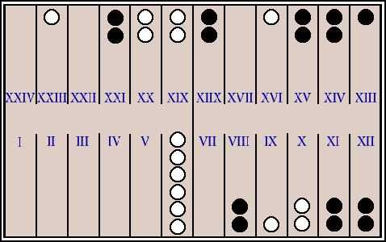
Una partita a Tabula dell’imperatore bizantino Zeno, prima del tiro sfortunato passato alla storia.
Infine, abbiamo raccolto alcuni tra i più divertenti e rappresentativi aneddoti ludici dei tempi antichi, sperando possano piacervi.
Nell'Iliade Omero racconta che Patroclo, illustre compagno di Achille, assassinò un commilitone in seguito a una partita a dadi persa per poco. D'altronde, possiamo capirlo: quante volte vi è capitato di voler uccidere un amico che vi ha soffiato la vittoria per pochi punti?
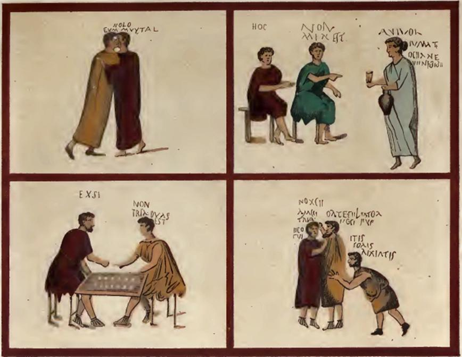
Dei Romani che giocano pacificamente ai dadi. Nella terza vignetta uno cerca di barare “Non tria, duas est!”, nella quarta l’oste dice “Se volete picchiarvi uscite in piazza!”
Si tramanda che in un mito Hermes (o Mercurio per i Romani), dio degli inganni, abbia voluto sfidare al gioco il pastore sovrintendente delle vacche di Apollo, con in palio la mandria stessa. Ovviamente vinse il dio, conducendo via il bottino, lasciando il pastore ad aspettare la punizione di Apollo.
Alcibiade, famoso politico aristocratico e condottiero greco del V sec. a.C., è famoso per essere stato un uomo estremamente arrogante, sicuro di sé, ironico e diretto, oltre che per i suoi meriti militari. Un esempio ne è il racconto che narra di Alcibiade da bambino che gioca insieme ad altri amici nobili a dadi tra le vie di Atene. All'improvviso un astragalo finisce in mezzo alla strada, costringendo un carro a fermarsi violentemente; Alcibiade, conscio di essere di famiglia aristocratica e quindi di non poter essere ucciso, decide di sedersi proprio davanti al carro fermo, chiamando i suoi amici. Tutti insieme continuano la partita restando al centro della carreggiata, impedendo ai poveri contadini e mercanti di passare, ostentando il proprio diritto di nobili e aristocratici.
Simpatici 'sti Greci, eh?
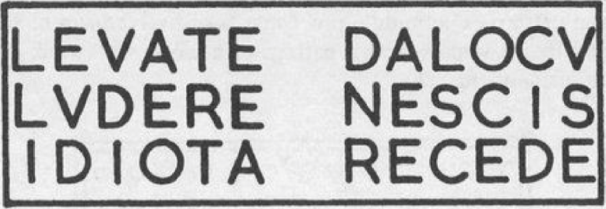
“Via da qui, non sai giocare! Idiota, vattene!” La simpatia dei Romani gareggia con quella dei Greci
Prima del gran casino provocato in America dall’arrivo di Colombo ed in seguito dei conquistadores europei, le culture Maya ed Azteche si divertivano a rincorrere una palla di caucciù per cercare di infilarla in degli anelli di pietra, ad offrire sacrifici umani, e, soprattutto, a giocare a Patolli.
Il gioco era una gara tra pedine attorno ad un tracciato a forma di croce, ma la parte più divertente erano le pesanti scommesse che i giocatori facevano ad ogni turno, in onore del dio Macuilxochitl (ora ditelo cinque volte velocemente).
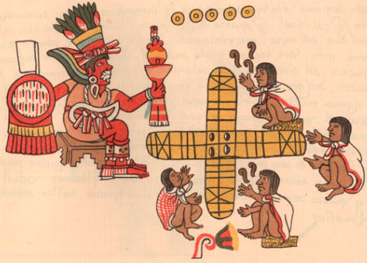
Aztechi perplessi che giocano a Patolli di fronte al dio Macuilxochitlakityxzwayhyfbgn@.
Per concludere citiamo alcuni passatempi tradizionali africani, le cui origini si perdono nella notte dei tempi, ma che sono tuttora praticati. Qualcuno potrà stupirsi scoprendo che molti di questi giochi richiedono l’aritmetica: nelle antiche tribù cisi divertiva infatti a indovinare quanti sassolini bisognasse togliere per rendere il totale divisibile per quattro, o ancora a togliere semi o altri “token” da un triangolo seguendo una certa sequenza aritmetica.
Il gioco più famoso è però il Mancala, le cui tracce sono presenti anche nella cultura egizia, in cui i giocatori “seminano” pedine in varie ciotole o caselle per fare punti.
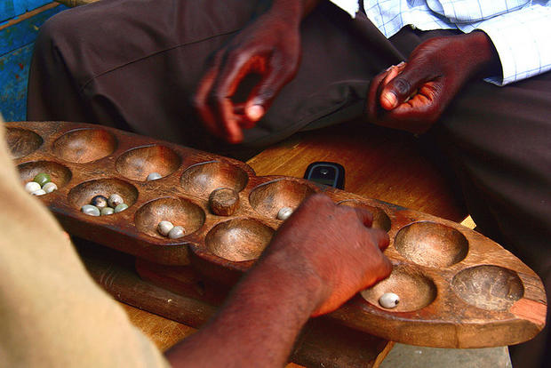
Due giocatori si sfidano a Mancala: notate il telefono, vero reperto archeologico della foto
Speriamo di avervi fatto imparare qualcosa (capre!), e concludiamo con un Alea Iacta Est (cit)